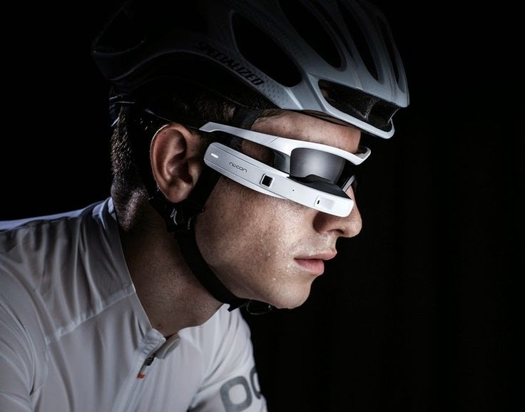

Nosso inovador óculos "Cyclists' View"! Projetado especialmente para aprimorar a experiência de quem pedala, nosso produto oferece visão periférica ampliada, garantindo segurança e conforto durante o percurso.
Os óculos de ciclismo oferecem proteção essencial contra os raios solares durante suas pedaladas diurnas.
As lentes bloqueiam os raios UV prejudiciais, protegendo seus olhos da exposição prolongada ao sol.
Com óptica patenteada de alta definição (HDO), esses óculos de ciclismo expandem a visão periférica e proporcionam clareza e nitidez visual em todos os ângulos, algo fundamental para competidores.
Feitos de materiais resistentes, esses óculos protegem seus olhos contra pedrinhas, poeira, lama e vento.
Ideal para mountain bikers, pois também evitam choques contra galhos de árvores.
As lentes não embaçam, garantindo visibilidade clara durante todo o percurso.
Essencial para evitar acidentes e manter a segurança.
O design diferenciado proporciona ventilação adequada.
Ajuste confortável e seguro para longas pedaladas.
Considere o tipo de ciclismo (estrada, MTB etc.) e a proteção necessária.
Opte por lentes polarizadas para reduzir o brilho e melhorar a visibilidade.
Seja você um ciclista profissional ou alguém que adora pedalar como lazer, nosso óculos é a escolha ideal para proteger seus olhos e melhorar sua performance.